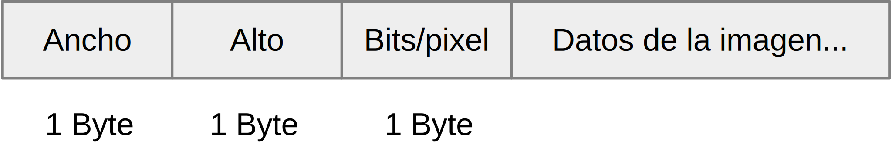
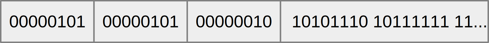
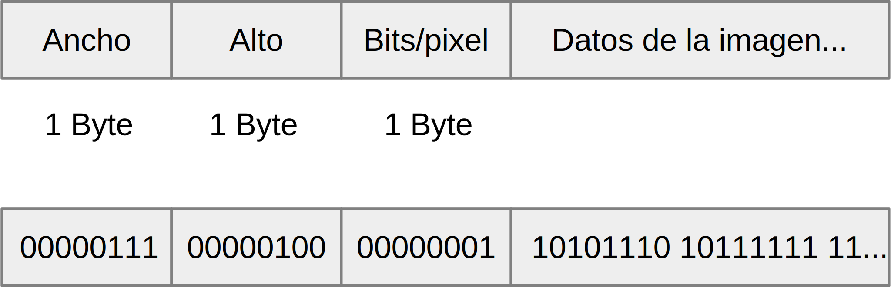
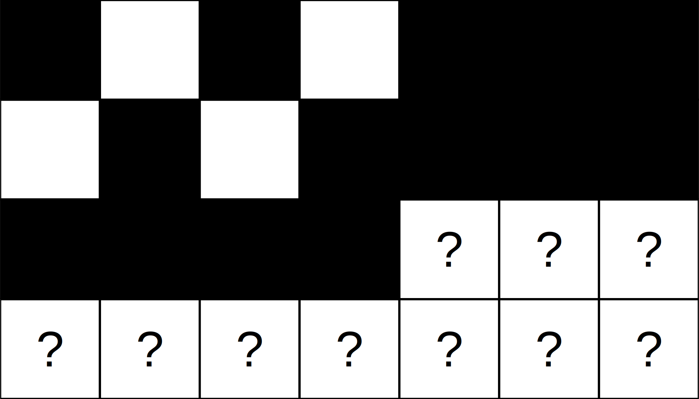
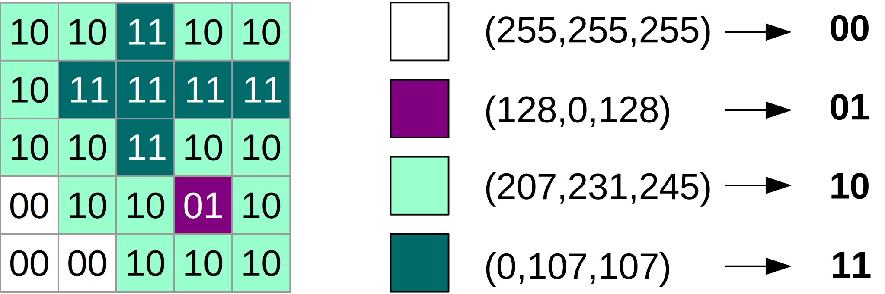
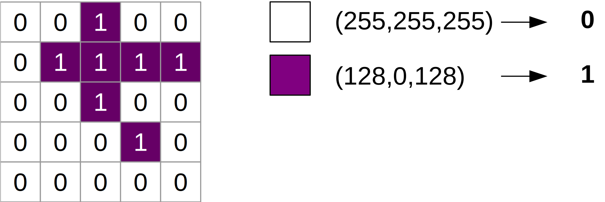
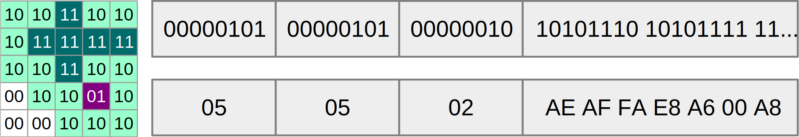
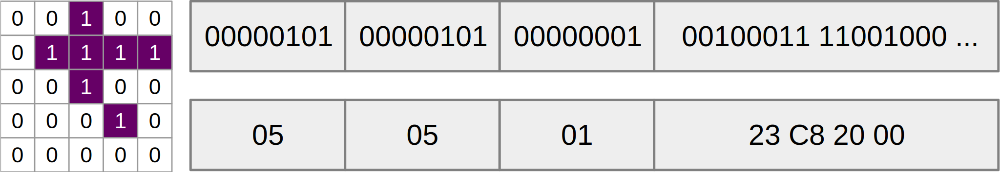
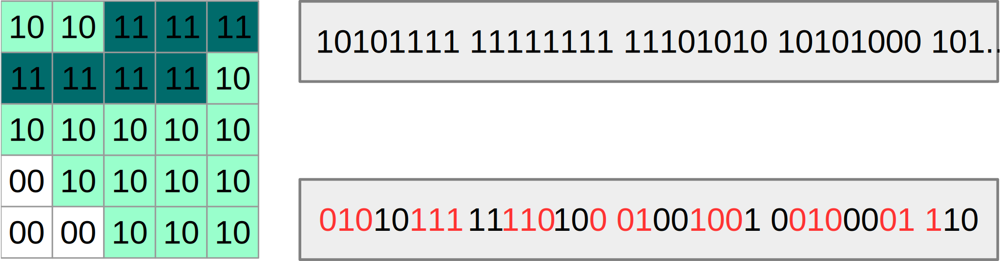

Representación de texto y multimedia
#Representación de Texto y multimedia
En esta parte de la unidad veremos la forma de representar otras clases de información no numérica, como los textos y las imágenes.
Representando texto con bytes
Binario Octal Dec Hexa Carácter 00110000 060 48 30 $0$ 00110001 061 49 31 $1$ 00110010 062 50 32 $2$ ... 01000001 101 65 41 $A$ 01000010 102 66 42 $B$ 01000011 103 67 43 $C$ ...
##Codificación de texto
Cuando escribimos texto en nuestra computadora, estamos almacenando temporariamente en la
memoria una cierta secuencia de números que corresponden a los **caracteres**, o símbolos que tipeamos en nuestro teclado.
Estos caracteres tienen una **representación gráfica** en nuestro teclado, en la pantalla o en la
impresora, pero mientras están en la memoria no pueden ser otra cosa que **bytes**, es decir,
conjuntos de ocho dígitos binarios.
Para lograr almacenar caracteres de texto necesitamos adoptar
una **codificación**, es decir, una tabla que asigne a cada carácter un patrón de bits fijo.
Esta codificación debe ser universal: para poder compartir información entre usuarios, o
entre diferentes aplicaciones, se requiere algún estándar que sea comprendido y respetado
por todos los usuarios y las aplicaciones. Hacia la mitad del siglo XX no existía un único estándar,
y cada fabricante de computadoras definía el suyo propio. La comunicación entre diferentes
computadoras y sistemas era complicada y llevaba mucho trabajo improductivo.
Códigos de caracteres
ASCII Unicode
UTF-8
Codificación de símbolos con longitud de representación variable
ISO 8859-1
Símbolos con longitud de representación de un byte
##Códigos de caracteres
Inicialmente se estableció con este fin el **código ASCII**, que durante algún tiempo
fue una buena solución. El código ASCII relaciona cada secuencia de **siete bits** con un carácter
(o **grafema**) específico de la **Tabla ASCII**. Es decir que hay $2^7 = 128$ posibles caracteres codificados por el código ASCII.
Sin embargo, el código ASCII es insuficiente para muchas aplicaciones: no contempla las
necesidades de diversos idiomas. Por ejemplo, nuestra letra Ñ no figura en la tabla ASCII. Tampoco
las vocales acentuadas, ni con diéresis, como tampoco decenas de otros caracteres de varios idiomas
europeos. Peor aún, con solamente 128 posibles patrones de bits, es imposible representar algunos
idiomas orientales como el chino, que utilizan miles de ideogramas.
Por este motivo se estableció más tarde una familia de nuevos estándares, llamada Unicode.
Uno de los estándares o esquemas de codificación definidos por Unicode, el más utilizado actualmente, se llama
**UTF-8**. Este estándar mantiene la codificación que ya empleaba el código ASCII para su conjunto
de caracteres, pero agrega códigos de dos, tres y cuatro bytes para otros símbolos. El resultado es
que hoy, con UTF-8, se pueden representar todos los caracteres de cualquier idioma conocido. Más aún,
con UTF-8 pueden codificarse textos multilingües.
Otro estándar utilizado, **ISO/IEC 8851**, codifica los caracteres de la mayoría de los idiomas de
Europa occidental.
El código ASCII, los diferentes esquemas de Unicode, y el estándar ISO/IEC 8851, coinciden en la
codificación de las letras del alfabeto inglés, que son comunes a la mayoría de los idiomas
occidentales, y en la codificación de símbolos usuales como los dígitos, símbolos matemáticos, y otros.
Por este motivo son relativamente compatibles, aunque cuando el texto utiliza otros caracteres aparecen diferencias.
Tabla de códigos ASCII
32 44 , 56 8 68 D 80 P 92 \ 104 h 116 t
33 ! 45 - 57 9 69 E 81 Q 93 ] 105 i 117 u
34 " 46 . 58 : 70 F 82 R 94 ^ 106 j 118 v
35 # 47 / 59 ; 71 G 83 S 95 _ 107 k 119 w
36 $ 48 0 60 < 72 H 84 T 96 ` 108 l 120 x
37 % 49 1 61 = 73 I 85 U 97 a 109 m 121 y
38 & 50 2 62 > 74 J 86 V 98 b 110 n 122 z
39 ' 51 3 63 ? 75 K 87 W 99 c 111 o 123 {
40 ( 52 4 64 @ 76 L 88 X 100 d 112 p 124 |
41 ) 53 5 65 A 77 M 89 Y 101 e 113 q 125 }
42 * 54 6 66 B 78 N 90 Z 102 f 114 r 126 ~
43 + 55 7 67 C 79 O 91 [ 103 g 115 s 127
##Tabla de códigos ASCII
El código ASCII asigna patrones de siete bits a un conjunto de caracteres
que incluye:
- Las 25 letras del alfabeto inglés, mayúsculas y minúsculas;
- Los dígitos del 0 al 9,
- Varios símbolos matemáticos, de puntuación, etc.,
- El espacio en blanco,
- Y 32 caracteres no imprimibles. Estos caracteres no imprimibles son combinaciones de bits
que no tienen una representación gráfica o grafema, sino que sirven para diversas funciones de
comunicación de las computadoras con otros dispositivos. Suelen ser llamados **caracteres de control**.
En general, prácticamente todos los símbolos que figuran en nuestro teclado tienen un código
ASCII asignado. Como sólo se usan siete bits, el bit de mayor orden (el de más a la izquierda) de
cada byte siempre es cero, y por lo tanto los códigos ASCII toman valores de 0 a 127.
Este mismo archivo de texto
Vista en caracteres
$ head -7 TextoYMultimedia.html
<!doctype html>
<html lang="es">
<head>
Introducción a la Computación
##Textos y documentos
Un archivo de texto es una sucesión de caracteres codificados bajo algún estándar. Puede manipularse con programas básicos como los **editores de texto** u otras herramientas que ofrece el ambiente del sistema operativo. Un archivo de texto es directamente legible por humanos porque contiene únicamente los caracteres que constituyen las palabras, espacios en blanco o saltos de línea.
Otra clase de archivos, los que son creados y manipulados por **procesadores de texto**, además de esa información tienen una estructura compleja que permite definir características de presentación y organización del texto. Esto incluye los diferentes tipos, tamaños o colores de los caracteres, las dimensiones de la página, la organización en secciones o capítulos, etc. La estructura de los archivos generados por los procesadores de texto es específica de cada programa y convierte al documento en algo que sólo puede ser leído con el procesador de texto correspondiente.
##Archivos de hipertexto
Una página HTML servida por un servidor Web es un archivo de texto que suele estar codificado en el estándar UTF-8. El contenido de este texto es directamente legible, pero no es exactamente lo que muestra el navegador, sino que esa representación gráfica está indicada por el lenguaje HTML en el que está escrito el documento. Las propiedades de navegación del documento también están determinadas por elementos del lenguaje HTML.
Las primeras líneas del documento HTML definen cuestiones relativas a la presentación que hará el navegador, como el idioma en el cual está escrita la página, el conjunto de caracteres que la codifica, el título que debe presentarse en la ventana de visualización, etc. Estas líneas se especifican en el lenguaje especial de la Web, el lenguaje de marcado de hipertexto, o HTML.
Con el navegador podemos visualizar el texto de esa página pulsando las teclas CTRL+U. Lo mismo si descargamos la página hacia un archivo y usamos el comando **head**. Lo que se ve es diferente de lo que muestra el navegador: se trata del **código fuente** de la página HTML.
Este mismo archivo de texto
Vista en octal
$ hexdump -bc TextoYMultimedia.html | head -16
0000000 074 041 144 157 143 164 171 160 145 040 150 164 155 154 076 012
0000000 < ! d o c t y p e h t m l > \n
0000010 074 150 164 155 154 040 154 141 156 147 075 042 145 163 042 076
0000010 < h t m l l a n g = " e s " >
0000020 012 011 074 150 145 141 144 076 012 011 011 074 155 145 164 141
0000020 \n \t < h e a d > \n \t \t < m e t a
0000030 040 143 150 141 162 163 145 164 075 042 165 164 146 055 070 042
0000030 c h a r s e t = " u t f - 8 "
0000040 076 012 011 011 074 164 151 164 154 145 076 111 156 164 162 157
0000040 > \n \t \t < t i t l e > I n t r o
0000050 144 165 143 143 151 303 263 156 040 141 040 154 141 040 103 157
0000050 d u c c i � � n a l a C o
0000060 155 160 165 164 141 143 151 303 263 156 074 057 164 151 164 154
0000060 m p u t a c i � � n < / t i t l
0000070 145 076 012 011 011 074 155 145 164 141 040 156 141 155 145 075
0000070 e > \n \t \t < m e t a n a m e =
Presentemos otras vistas del mismo archivo de texto, a fin de mostrar que se compone simplemente de una secuencia de bytes.
Con diferentes comandos o programas de visualización podemos ver, carácter por carácter, cómo está construido este texto. El comando **hexdump -bc** nos da la lista de los caracteres que componen el texto, con la notación en octal de su código, que aparece encima de cada uno de ellos.
Las letras acentuadas se representan con una serie de caracteres UTF-8 especiales, no pertenecientes a la zona visible del ASCII. El comando separa el carácter en los bytes que lo componen y los muestra individualmente.
Los caracteres de control, como el tabulador y el fin de línea, no tienen un grafema asociado, sino que se representan por las secuencias **\\t** y **\\n** respectivamente. Estos caracteres desplazan el cursor de posición que escribe los caracteres en pantalla (o en una impresora) para organizar visualmente la presentación del texto, y también son parte del código fuente de la página.
Este mismo archivo de texto
Vista en hexadecimal
$ hexdump -C TextoYMultimedia.html | head -8
00000000 3c 21 64 6f 63 74 79 70 65 20 68 74 6d 6c 3e 0a |<!doctype html>.|
00000010 3c 68 74 6d 6c 20 6c 61 6e 67 3d 22 65 73 22 3e |<html lang="es">|
00000020 0a 09 3c 68 65 61 64 3e 0a 09 09 3c 6d 65 74 61 |..<head>...<meta|
00000030 20 63 68 61 72 73 65 74 3d 22 75 74 66 2d 38 22 | charset="utf-8"|
00000040 3e 0a 09 09 3c 74 69 74 6c 65 3e 49 6e 74 72 6f |>...<title>Intro|
00000050 64 75 63 63 69 c3 b3 6e 20 61 20 6c 61 20 43 6f |ducci..n a la Co|
00000060 6d 70 75 74 61 63 69 c3 b3 6e 3c 2f 74 69 74 6c |mputaci..n</titl|
00000070 65 3e 0a 09 09 3c 6d 65 74 61 20 6e 61 6d 65 3d |e>...<meta name=|
Del mismo modo, el comando **hexdump -C** muestra cada uno de los grafemas de los caracteres acompañado de su codificación en hexadecimal. Esta vista no muestra los caracteres acentuados ni los de control, sino que los reemplaza por puntos.
**Pregunta**
- Estos comandos aplicados a un documento HTML muestran información legible porque se trata, esencialmente, de un archivo de texto. ¿Qué ocurre si los mismos comandos se aplican a un archivo creado por un procesador de texto?
Imagen digital
Discretización
División de un espacio continuo en partes discretas
Espacio analógico → digital
Discretizar una imagen
Definir cantidad de puntos → ancho y alto
Definir una cantidad de colores → profundidad de color
Digitalizar
Representar una imagen por una sucesión de números
Indicando dimensiones y color de cada punto
##Imagen digital
Otras clases de datos, diferentes del texto, también requieren codificación (porque siempre deben
ser almacenados en la memoria en forma de bits y bytes), pero su tratamiento es diferente.
Introducir en la computadora, por ejemplo, una imagen analógica (tal como un dibujo o una
pintura hecha a mano), o un fragmento de sonido tomado del ambiente, requiere un proceso previo
de **digitalización**. Digitalizar es convertir en digital la información que es analógica, es decir,
convertir un rango **continuo** de valores (lo que está en la naturaleza) a un conjunto **discreto** de
valores numéricos.
Tamaños reales, en pixels
8x6 16x12 24x18 32x24 40x30
Si partimos de una imagen analógica, el proceso de digitalización involucra la división de la imagen
en una fina cuadrícula, donde cada elemento de la cuadrícula abarca un pequeño sector
cuadrangular de la imagen. A cada elemento de la cuadrícula se le asignan valores
discretos que codifican el color de la imagen en ese lugar.
Estos elementos o puntos se llaman **pixels** (del inglés, **picture element**). La imagen queda constituida por una sucesión de valores de color para cada pixel de los que forman la imagen.
En general, mientras más elementos de cuadrícula (más pixels) podamos representar, mejor será la aproximación a nuestra pieza
de información original. Mientras más fina la cuadrícula (es decir, mientras mayor sea la
**resolución** de la imagen digitalizada), y mientras más valores discretos usemos para representar los
colores, más se parecerá nuestra versión digital al original analógico.
Notemos que la digitalización de una imagen implica la discretización de **dos** variables analógicas:
- Por un lado, los infinitos puntos de la imagen analógica, bidimensional, deben reducirse a unos pocos rectángulos discretos.
- Por otro lado, los infinitos valores de color deben reducirse a unos pocos valores discretos, en el rango de nuestro
esquema de codificación.
Este proceso de digitalización es el que hacen automáticamente una cámara de fotos digital o un celular,
almacenando luego los bytes que representan la imagen tomada.
Color
RGB = Red, Green, Blue
Diferentes valores de (r,g,b) , componen todos los colores
Se define un espacio de valores en [0,255] para cada coordenada
Azul: (0,0,255)
Amarillo: (255,255,0)
Blanco: (255,255,255)
Negro: (0,0,0)
Gris: ($x$,$x$,$x$)
##Color
Hay varias maneras de representar el color en las imágenes digitales. Una forma es definir, para cada pixel o punto de la imagen, tres coordenadas que describen las intensidades de luz **roja, verde y azul** que conforman cada color.
Cuando se crea una mezcla de rayos de luz de colores con diferentes intensidades, usando un proyector o una pantalla como los displays LED, las ondas luminosas individuales del rojo, verde y azul se suman formando otros colores. Este esquema de representación del color se llama **RGB** por las iniciales de los colores rojo, verde y azul en inglés.
Para cada punto, esas tres coordenadas son números en un cierto intervalo. El valor mínimo de una coordenada, el 0, representa la ausencia de ese color. El valor máximo, la intensidad máxima de ese color que se puede reproducir con el dispositivo de salida que lo está visualizando. Cuando las coordenadas se representan en un byte, cada coordenada puede ir entre 0 y 255.
Así, la terna (0, 0, 0) representa el negro (ausencia de los tres colores), la terna (255, 255, 255) el blanco (valores máximos de los tres colores, sumados), etc.
###Profundidad de color
Con este esquema de representación de color, cada pixel o elemento de la imagen quedaría representado por tres bytes, o 24 bits. Sin embargo, las cámaras fotográficas digitales modernas utilizan un esquema de codificación con mucha mayor **profundidad de color** (es decir, más bits por cada coordenada de color) que en el ejemplo anterior.
Paleta de colores
255,255,255 → 00 128,0,128 → 01 207,231,245 → 10 0,107,107 → 11
##Formato de imagen
Lógicamente, para las imágenes con muchos colores (como las escenas de la naturaleza donde hay gradaciones de colores) es conveniente contar con muchos bits de profundidad de color. Sin embargo, cuando una imagen se compone de pocos colores, la imagen digital es innecesariamente grande, costosa de almacenar y de transmitir. En estos casos es útil definir un **formato de imagen** que represente esos pocos colores utilizando menos bits.
Una forma de hacerlo es definir una **paleta de colores**, que es una lista de los diferentes colores utilizados en la imagen, codificados con la mayor economía de bits posible.
Si conocemos la cantidad de colores en la imagen, podemos determinar la cantidad mínima de bits que permite codificarlos a todos.
Así, cada pixel de la imagen, en lugar de quedar representado por una terna de valores, puede representarse por un número de color en la paleta.
Queda por especificar **cuál color es el que está codificado por cada número de color** de la paleta. Si una imagen tiene dos bits de profundidad de color, los colores serán cuatro, y sus códigos serán **00, 01, 10, 11**. Pero, ¿cuáles exactamente son estos colores? Tal vez, blanco, negro, rojo y azul. Pero tal vez sean cuatro niveles de gris. O cuatro diferentes tonos de verde.
Para simplificar nuestro trabajo asumiremos que esto no es importante, sino que el problema consiste únicamente en que nuestro formato determine los códigos de colores de cada uno de los pixels. El problema de cuáles son los colores asignados a esos códigos puede resolverse de otras maneras: por ejemplo, suponiendo que existe una hipotética tabla universal de colores y códigos, conocida por todos.
Paleta de colores
Paleta de colores
Datos de la imagen
¿Cómo comunicar esta imagen a otro programa u otra computadora?
¿Qué falta especificar para poder reconstruir esta imagen?
La imagen queda entonces representada por una sucesión de bits que codifican los colores de los pixels. Esta sucesión de bits está lista para ser comunicada a otra computadora a través de la red, o un programa puede entregarla a otro para efectuarle algún procesamiento. O bien, esta sucesión de bits puede ser almacenada y recuperada en un momento futuro.
Sin embargo, si sólo se almacena o transfiere esta sucesión de bits, la imagen puede no ser correctamente interpretada.
Datos de la imagen
10
10
11
10
10
10
11
11
11
11
10
10
11
10
10
00
10
10
01
10
00
00
10
10
10
¿Cuáles son el ancho y el alto? ¿En cuántos bits se expresa la paleta?
Dimensiones y profundidad de color de la imagen
El programa que reciba esta sucesión de bits debe conocer además cómo se disponen en el espacio los pixels, es decir, cuál es el ancho y el alto de la imagen; y exactamente cuántos bits codifican un pixel. Si esta información no está presente en el archivo que representa la imagen, su reconstrucción puede ser errónea o imposible.
Nuestro formato de imagen digital debe contener información **de dimensiones y de profundidad de color**, para poder ser comunicado efectivamente hacia otros programas o computadoras.
Un formato de imagen


050502AEBF3...
##Un formato de imagen
Teniendo en cuenta todo lo anterior, podemos definir un formato de imagen como sigue. El formato de archivo de imagen tendrá una primera sección o **cabecera** con datos acerca de la imagen, o **metadatos**, y una segunda sección con los bits o datos de la imagen propiamente dichos.
- El primer byte de la cabecera del archivo se reserva para especificar el **ancho** de la imagen, es decir, cuántos pixels hay en cada fila.
- El segundo byte se reserva para especificar la **altura** o cantidad de filas de pixels de la imagen.
- El tercer byte especifica la profundidad de color, o cantidad de **bits por pixel**. Esta cantidad de bits por pixel define la cantidad de colores que se pueden codificar en la imagen. Si la imagen tiene $n$ bits por pixel, hay $2^n$ posibilidades para el código de color y por lo tanto $2^n$ colores representables.
- Finalmente, el resto del archivo contiene los bits que representan a cada uno de los pixels por su color. Éstos son los datos de la imagen propiamente dicha.
**Ejemplo**
Un archivo que define una imagen de **cinco por cinco pixels, a cuatro colores**, comienza con los bytes 00000101, 00000101, 00000010, y sigue con los datos de la imagen.
Como la cantidad de datos binarios de un archivo en este formato es muy grande, para hacerlo más manejable usaremos notación hexadecimal. Entonces el archivo del ejemplo se representa por el hexadecimal 050502... y a continuación siguen en hexadecimal los códigos de color de los pixels.
Reconstruyendo una imagen
070401AEBF3...


##Reconstruyendo una imagen
Para interpretar qué imagen describe un archivo dado, consideramos primero su cabecera y buscamos cuál es el ancho y el alto (indicados por los primeros dos bytes), y cuántos bits por pixel están codificados en el resto del archivo (indicados por el tercer byte). De esta manera no es difícil dibujar la imagen.
**Ejemplo**
- Una imagen dada por la cadena hexadecimal **070401AEBF3...** tendrá $7 \times 4$ pixels, y un solo bit de paleta.
- Como la paleta se codifica con un solo bit, esta imagen es en blanco y negro (no puede haber más que dos valores de color).
- Los dígitos hexadecimales a partir de la cadena **AEBF3...** se analizan como grupos de cuatro bits y nos dicen cuáles pixels individuales están en negro (bits en 1) y en blanco (bits en 0).
Compresión
Reducción del tamaño de los datos aplicando operaciones sobre los bits
Ocupar menos espacio de almacenamiento
Transferencia más rápida a través de la red
Diferentes algoritmos
##Compresión de datos
Muchas veces es interesante reducir el tamaño de un archivo, para que ocupe menos espacio de
almacenamiento o para que su transferencia a través de una red sea más rápida. Al ser todo archivo
una secuencia de bytes, y por lo tanto de números, disponemos de métodos y herramientas
matemáticas que permiten, en ciertas condiciones, reducir ese tamaño. La manipulación de los bytes
de un archivo con este fin se conoce como **compresión**.
La compresión de un archivo se ejecuta mediante un programa que utiliza un algoritmo especial de
compresión. Este algoritmo puede ser de **compresión sin pérdida**, o de **compresión con pérdida**.
Compresión sin pérdida
Los datos comprimidos tienen la misma cantidad de información, pero están organizados de forma diferente
Existe un algoritmo inverso
Los datos originales pueden recuperarse tal cual eran
Compresor de archivos (Zip, PKZip, 7Zip, RAR)
Compresión de páginas web (gzip)
##Compresión sin pérdida
Decimos que la compresión ha sido **sin pérdida** cuando puede extraerse del archivo comprimido
exactamente la misma información que antes de la compresión, utilizando otro algoritmo que
ejecuta el trabajo inverso al de compresión. En otras palabras, la compresión sin pérdida es
reversible: aplicando el algoritmo inverso, o de descompresión, siempre puede volverse a la
información de partida. Esto es un requisito indispensable
cuando necesitamos recuperar exactamente la secuencia de bytes original, como en el caso de un
archivo de texto, una base de datos, una planilla de cálculo.
Como usuarios de computadoras, es muy probable que hayamos utilizado más de
una vez la compresión sin pérdida, al tener que comprimir un documento de texto,
utilizando un programa utilitario como ZIP, RAR u otros. Si la compresión no fuera
reversible, no podríamos recuperar el archivo de texto tal cual fue escrito.
También somos usuarios de la compresión, muchas veces sin sospecharlo, al consultar
páginas de Internet. Muchos sitios populares utilizan compresión para acelerar
la descarga de sus contenidos. Los navegadores cuentan con el conocimiento para
identificar cuándo una página está comprimida, y saben descomprimirla en forma transparente,
es decir, sin que el usuario necesite hacer ni saber nada.
Compresión con pérdida
Los datos comprimidos tienen menos información que los originales
No existe un algoritmo inverso
Los datos originales no pueden ser recuperados a partir de los comprimidos
Sin embargo los datos comprimidos siguen siendo útiles
Reducción de resolución y/o de profundidad de color
Filtrado de frecuencias (teléfono, CD)
MP3, MP4
##Compresión con pérdida
Cuando la compresión se hace con una técnica **con pérdida**, no existe un algoritmo de
descompresión que recupere la información original; es decir, no existe un algoritmo inverso.
El resultado de la compresión con pérdida de un archivo es otro archivo del cual ya no puede
recuperarse la misma información original, pero que de alguna manera sigue sirviendo a los fines
del usuario. La pérdida de información **es intencional**, y es el usuario quien ha elegido descartar
esa información porque no es necesaria.
En el mundo analógico es frecuente la compresión con pérdida, por ejemplo en el caso de la compresión de
audio, al descartar componentes del sonido con frecuencias muy bajas o muy altas, inaudibles para
los humanos (como en la tecnología de grabación de CDs), con lo cual la diferencia
entre el material original y el comprimido no es perceptible al oído. También es útil, para algunos fines, reducir la
calidad del audio quitando algunos componentes audibles (lo que hacen, por ejemplo, los sistemas telefónicos, o
algunos grabadores “de periodista” para lograr archivos más pequeños, con audio de menor fidelidad, pero donde el
diálogo sigue siendo comprensible).
Al utilizar un servicio de *streaming* de video o audio, muchas veces se nos da la oportunidad de elegir una
"calidad" menor del audio o del video, lo que quiere decir que el audio o la imagen se representarán con menos
bits por segundo, y se transferirán a través de la red más rápidamente. Estas diferentes "calidades" menores son formas de compresión con pérdida.
Los estándares MP3 y MP4 son ejemplos de formatos de archivos digitales comprimidos con pérdida. Para
comprimir con pérdida imágenes, se reduce su calidad, ya sea disminuyendo la resolución
o utilizando menos colores.
Comprimido, 360x270 pixels
Comprimido, 180x135 pixels
Tamaños en bytes
$ ls -l imagen*
-rw-r--r-- 1 oso oso 55834 Mar 23 2013 imagen.jpg
-rw-r--r-- 1 oso oso 18048 Apr 7 11:30 imagen2.jpg
-rw-r--r-- 1 oso oso 6042 Apr 7 11:46 imagen3.jpg
Compresión con pérdida

###Reducción de color
Si la imagen tiene $ancho \times alto$ pixels, y la información de color es de $n$ bits por pixel, el archivo sin su cabecera mide $ancho \times alto \times n$ bits. Una forma sencilla de compresión con pérdida, que no modifica la resolución, es la reducción de la profundidad de color de una imagen. Si la imagen puede seguir siendo útil con menos colores, comprimiendo la paleta de colores puede obtenerse un archivo de menor tamaño.
Comprimir la paleta de colores consiste en reescribir la imagen con una cantidad menor de bits por pixel. Cada vez que la cantidad de bits por pixel decrece en uno, la profundidad de color, es decir, la cantidad de colores diferentes, se divide por dos. De esta forma se puede reducir la cantidad de bits utilizados para expresar cada pixel, claro está, al costo de perder información de color de la imagen.
**Ejemplo**
Sea una imagen a cuatro colores; luego la cantidad de bits por pixel es 2. Al reducir la profundidad de color, los colores 00 y 10 pasan a ser el único color 0; y los colores 10 y 11 pasan a ser el único color 1. Todos los pixels quedan expresados por un único bit 0 o 1, reduciendo efectivamente el tamaño de la imagen.
- La información ha sido **comprimida con pérdida** porque el archivo original no puede ser reconstruido a partir de este nuevo archivo.
- El nuevo archivo, sin su cabecera, mide $ancho \times alto \times (n - 1)$, o sea, es $ancho \times alto$ bits más corto que el original.
Compresión con pérdida

Un método para reducir a la mitad la profundidad de color puede ser como sigue:
1. Escribir la tabla de códigos de color.
2. Retirar el bit más alto de cada código de color en la paleta.
3. Eliminar de la paleta los códigos duplicados.
4. Reescribir la cabecera del archivo manteniendo ancho y alto pero con la nueva cantidad de bits por pixel.
5. Reescribir los datos de la imagen reemplazando el código original de color de cada pixel por el nuevo código, es decir, quitando el bit más alto de cada pixel.
Dos pixels cuyos códigos de color diferían sólo en el bit de orden más alto ahora tendrán el mismo código, y por lo tanto se "pintarán" del mismo color. El archivo ya no contiene la información necesaria para saber cuál era el color original de cada pixel.
Compresión con pérdida


**Ejemplo**
Si el archivo está dado por la cadena hexadecimal **050502AEAFFAE8A600A8** (ancho: 5, alto: 5, bits por pixel: 2, pixels: 10 10 11 10 10 10 11 11 11 11 10 10 11 10 10 00 10 10 01 10 00 00 10 10 10), los pasos del procedimiento anterior son:
1. La tabla de códigos de color es {00 01 10 11}.
2. Sin su bit más alto, estos códigos son {0 1 0 1}.
3. Sin duplicados, quedan los códigos {0 1}.
4. La cabecera del nuevo archivo es {ancho: 5, alto: 5, bits por pixel: 1}.
5. Los bits que describen los pixels de la nueva imagen son {0 0 1 0 0 0 1 1 1 1 0 0 1 0 0 0 0 0 1 0 0 0 0 0 0 }.
La imagen comprimida queda como **05050123C82000** (ancho: 5, alto: 5, bits por pixel: 1, pixels: 0 0 1 0 0 0 1 1 1 1 0 0 1 0 0 0 0 0 1 0 0 0 0 0 0).
**Pregunta**
- Se ha visto cómo reducir la profundidad de color en exactamente 1 bit. ¿Cómo podemos generalizar el método, para reducir la información de color en una cantidad de bits cualquiera?
Compresión sin pérdida
Técnicas de RLE (Run-length-encoding )
Sustituir una sucesión de elementos repetidos por un coeficiente
Códigos de Huffmann o de longitud variable
Sustituir los elementos más frecuentes por cadenas de bits más cortas
##Algoritmos de compresión sin pérdida
Aunque los programas que aplican algoritmos de compresión sin pérdida pueden ser muy sofisticados, algunas ideas básicas son muy sencillas.
###Run Length Encoding o RLE
Supongamos tener una imagen en el formato que ya hemos descripto, y supongamos además que los datos de la imagen, es decir, la sucesión de bits que codifican los pixels, presentan grandes zonas de pixels con el mismo valor (muchos "1" seguidos, y muchos "0" seguidos). Si quisiéramos transmitir esta información por teléfono a alguien más, para que la imagen pudiera ser dibujada del otro lado, tarde o temprano la conversación incluiría frases como "...ahora cinco unos, ahora doce ceros...". Esta forma de descripción es mucho más económica, y menos propensa a errores.
Resulta natural abreviar la descripción de la imagen usando este tipo de expresiones, donde las cantidades funcionan como **coeficientes**. Un método inspirado directamente en esta idea se llama **Run Length Encoding (RLE)** o **Codificación por longitud de secuencia**. Una **secuencia** es una subsucesión de elementos del mismo valor. El método RLE identifica secuencias de elementos de un mismo valor, computa su longitud, y emite, en lugar de la secuencia, el coeficiente de longitud y el valor que corresponde.
Por supuesto, la efectividad de este método de compresión depende de la **redundancia** presente en el material original. Si no hay secuencias largas, el método no logrará compresión aceptable, e inclusive puede resultar contraproducente (el archivo final puede ser más largo que el original).
Para comprimir sin pérdida una pieza de información cualquiera con la técnica RLE o de Run Length Encoding, primeramente fijamos la cantidad de bits que ocuparán los coeficientes de longitud de secuencias. Esta cantidad de bits, ya que define el tamaño máximo de los coeficientes, debe ser elegida con cuidado:
- Si los coeficientes son pequeños, y la redundancia del archivo es muy alta, no aprovecharemos la capacidad de compresión del método.
- Si los coeficientes son muy grandes, y la imagen tiene poca redundancia, se desperdiciarán bits en los coeficientes y no lograremos buena compresión.
**Ejemplo**
- Si quisiéramos almacenar o transmitir un patrón de 253 "unos" seguidos de 119 "ceros" y luego 87 "unos", sin ninguna compresión, deberíamos manejar 458 bits. Si nuestra compresión utilizara la técnica RLE con ocho bits para el "coeficiente" y un bit para el valor repetido, bastaría con la secuencia binaria (11111101, 1, 01110111, 0, 01010111, 1) (en decimal 253, 1, 119, 0, 87, 1) que ocuparía tan sólo 27 bits.
###Códigos de Huffmann o de longitud variable
La compresión sin pérdida por el método de Huffmann utiliza códigos de longitud variable. El método consiste esencialmente en examinar el archivo completo buscando subsecuencias de bits repetidas. Se computa la frecuencia, o cantidad de veces que aparece, para cada una de estas subsecuencias. Las subsecuencias se ordenan descendentemente por frecuencia, y cada una se reemplaza por un [código instantáneo](https://es.m.wikipedia.org/wiki/C%C3%B3digo_prefijo) de bits de longitud creciente.
Por ejemplo, el carácter más frecuente será reemplazado por el código 1; el siguiente en frecuencia, por el código 01; el siguiente, por 001; etc. Así, los caracteres que aparecen más veces serán codificados por patrones de bits más cortos. De esta forma el archivo comprimido ocupará menos espacio que con un código de longitud uniforme.
**Ejemplo**
- El texto de once caracteres "ABRACADABRA" contiene cinco "A", dos "B", dos "R", una "C" y una "D". Si no utilizamos compresión, se necesitan $11 \times 8 = 88$ bits para representarlo. Si utilizamos compresión por códigos de longitud variable, crearemos un pequeño diccionario de la forma { A → 1, B → 01, R → 001, C → 0001, D → 00001 }. Con este diccionario, el texto se podrá representar como "1 01 001 1 0001 1 00001 1 01 001 1", en tan sólo 23 bits.
Compresión sin pérdida
Técnica RLE

###Compresión de imágenes con RLE
Fijada la cantidad de bits para coeficientes, la imagen se comprime indicando, para cada secuencia de pixels iguales, qué factor de repetición corresponde y qué valor de color llevan los pixels repetidos.
**Ejemplo**
La imagen con profundidad de color 2, cuyos datos de imagen son {10 10 11 11 11 11 11 11 11 10 10 10 10 10 10 00 ...}, tiene una secuencia de **dos pixels con valor 10**, **siete pixels con valor 11**, **seis pixels con valor 10**, etc.
Si utilizamos **tres bits para el coeficiente**, los coeficientes RLE **2, 7 y 6** se expresarán como **010, 111 y 110**. Los datos de la imagen se comprimirán como { 010 10 111 11 110 10... }. Los primeros treinta bits de los datos de imagen han quedado comprimidos a **quince** bits.
Bestiario
- Indique un caso de compresión con pérdida.
- Cuando el archibo llega corrubto y se pierde la informasión.
##Compresión con pérdida y pérdida de información
Es importante insistir en el punto siguiente, que con frecuencia es mal comprendido.
Si un archivo es comprimido **sin pérdida** y luego transferido a través de la red, llega a destino un cierto conjunto de bits que, en algunos casos, puede contener errores. El conjunto de bits puede tener valores intercambiados (ceros por unos) o estar incompleto. En estas condiciones, la descompresión o reconstrucción del archivo original no será posible, por pérdida de información. El programa que intente la descompresión fallará o entrará en una condición de error.
**Se ha perdido información**. Sin embargo, éste **no es un caso de compresión con pérdida**.
- La compresión **con pérdida** implica una pérdida de información que es **intencional**. La información ha sido quitada a propósito porque estaba de más, y no existe la intención de reconstruir el archivo original.
- Al comprimir **sin pérdida**, si existe pérdida de información, ésta ha sido **accidental**. La idea al comprimir era reconstruir el archivo en un momento posterior.